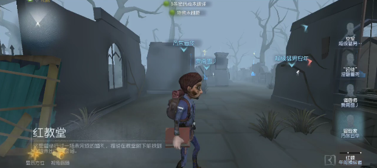
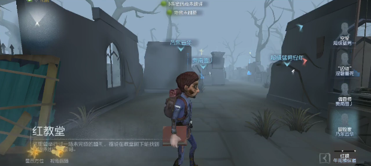

8个样本 都是教堂南边边的监管出生点
大推 | 2号机 | 小门2号机 | 小门空地 | ||
1 |  |  |  |  | |
2 |  |  |  |  | |
3 |  |  |  |  | |
4 |  |  |  |  | |
5 |  |  |  |  | |
6 |  |  |  |  | |
7 |  |  |  |  | |
8 |  |  |  |  | |
1/2/8可以归为一类 3/7可归为一类 4、5、6是三种完全不同的刷点 | 1/3可归为一类 6/7/8归为一类 在2号机墙北边 2/4可归为一类 5完全是不同的刷点 | 2/3刷在一板一窗内侧的墙南边 姑且把6也划为这个点（虽然差别挺大的 5刷在一板一窗墙北边 1/4可归为一类 7和8明显是另一种刷点 | 这个点不太好比对 |
大推 | 2号机 | 小门2号机 | 小门空地 | ||
1 |  | | | | |
2 | | | | | |
3 | | | | | |
4 | | | | | |
5 | | | | | |
6 | | | | | |
7 | | | | | |
8 | | | | | |
1/2/8可以归为一类 3/7可归为一类 4、5、6是三种完全不同的刷点 | 1/3可归为一类 6/7/8归为一类 在2号机墙北边 2/4可归为一类 5完全是不同的刷点 | 2/3刷在一板一窗内侧的墙南边 姑且把6也划为这个点（虽然差别挺大的 5刷在一板一窗墙北边 1/4可归为一类 7和8明显是另一种刷点 | 这个点不太好比对 |